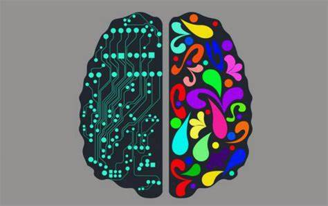

El razonamiento deductivo es un tipo de razonamiento lógico en el que se llega a conclusiones específicas a partir de premisas generales veraces previamente establecidas. Este tipo de razonamiento se basa en la lógica formal y sigue reglas estrictas, lo que significa que si las premisas son verdaderas y el razonamiento es válido, entonces la conclusión será cierta también, es decir, el razonamiento deductivo garantiza la certeza de la conclusión si las premisas y la estructura lógica son correctas.
Deductivo Ejemplo
Premisa Mayor: Todos los seres humanos son mortales
Premisa Menor: Sócrates es un ser humano
Conclusión: Sócrates es mortal
A pesar de lo que pueda parecer, el razonamiento deductivo no siempre es suficiente por sí solo para abordar problemas complejos o inciertos, y puede ser necesario combinarlo con otros tipos de razonamiento, como el razonamiento inductivo y abductivo, para obtener una comprensión más completa y precisa de las situaciones y problemas que enfrentamo
Esto podemos verlo más claro con un ejemplo. Imagina que eres un detective tratando de resolver un caso de robo en una casa. Hay varias pruebas disponibles, pero no hay testigos directos del crimen. En esta situación, el razonamiento deductivo por sí solo no sería suficiente para identificar al culpable, ya que no dispones de premisas generales previamente establecidas que te permitan llegar a conclusiones específicas sobre el caso.

Razonamiento deductivo Características
Parte de una premisa general para llegar a una conclusión específica
Es considerado un proceso lógico y riguroso
Si las premisas son verdaderas y la argumentación es válida, debe ser verdadera
Razonamiento Inductivo
El razonamiento inductivo es un tipo de razonamiento lógico en el que se llega a conclusiones generales a partir de observaciones específicas o casos particulares. A diferencia del razonamiento deductivo, que parte de premisas generales para llegar a conclusiones específicas, el razonamiento inductivo se basa en la observación de patrones o tendencias en los datos para inferir principios o leyes más amplios. Dado que el razonamiento inductivo se basa en la observación y no en reglas estrictas de lógica formal, las conclusiones derivadas de este tipo de razonamiento son probabilísticas y no garantizan la certeza como en el caso del razonamiento deductivo.
Características del Razonamiento inductivo
Parde de observaciones particulares para llegar a una conclusión general
Es un proceso probabilístico y menos riguroso que la deducción
La conclusión puede ser probable, pero no necesariamente cierta
Un ejemplo de razonamiento inductivo
Imagina que observas a varias personas utilizando paraguas en una calle. A partir de esta observación específica, podrías inferir que probablemente esté lloviendo en esa zona, aunque no hayas visto la lluvia directamente. En este caso, has utilizado el razonamiento inductivo para llegar a una conclusión general (que está lloviendo) a partir de observaciones específicas (personas con paraguas). Aunque la conclusión es probablemente cierta, no es absolutamente segura, ya que hay otras posibles explicaciones para las personas con paraguas (por ejemplo, podrían estar usando los paraguas para protegerse del sol).
El razonamiento inductivo es una herramienta valiosa para generar hipótesis y descubrir patrones en los datos, sin embargo, no garantiza la certeza de las conclusiones y puede ser susceptible a errores si las observaciones no son representativas o si se basan en muestras pequeñas o inadecuadas. Por lo tanto, es fundamental utilizar el pensamiento crítico y combinar el razonamiento inductivo con otros tipos de razonamiento, como el razonamiento deductivo y abductivo, para obtener una comprensión más precisa y completa de los problemas y situaciones que enfrentamos.
Razonamiento abductivo
El razonamiento abductivo es un tipo de razonamiento lógico que se utiliza para formular hipótesis o explicaciones plausibles a partir de observaciones o datos incompletos. A diferencia del razonamiento deductivo e inductivo, que se basa en premisas generales o en la observación de patrones, el razonamiento abductivo implica la generación de hipótesis que, si son verdaderas, podrían explicar las observaciones realizadas. Dado que el razonamiento abductivo se basa en la plausibilidad y no en reglas estrictas de lógica formal, las conclusiones derivadas de este tipo de razonamiento son inciertas y no garantizan la certeza.
Características
Intenta encontrar la explicación más plausible para un conjunto de observaciones
Es un proceso creativo y menos riguroso que la deducción
La conclusión puede ser probable, pero no necesariamente cierta
Un ejemplo
Imagina que te despiertas una mañana y encuentras el césped mojado del parque. A partir de esta observación, podrías formular la hipótesis de que llovió durante la noche, lo que explicaría por qué el césped está mojado. Sin embargo, también podrías considerar otras explicaciones plausibles, como que se encendió el sistema de riego. En este caso, has utilizado el razonamiento abductivo para generar posibles explicaciones a partir de una observación específica (el césped mojado).
El razonamiento abductivo es una herramienta valiosa para formular hipótesis y explicaciones en situaciones en las que los datos o las observaciones son incompletos o inciertos, pero, al igual que el razonamiento inductivo, no garantiza la certeza de las conclusiones y puede ser susceptible a errores si las hipótesis no son evaluadas adecuadamente o si se ignoran explicaciones alternativas. Por lo tanto, es fundamental utilizar el pensamiento crítico y combinar el razonamiento abductivo con otros tipos de razonamiento, como el razonamiento deductivo e inductivo, para obtener una comprensión más precisa y completa de los problemas y situaciones que enfrentamos.
Razonamiento analógico
El razonamiento analógico se basa en la identificación de similitudes entre diferentes situaciones, objetos o conceptos y en la aplicación de las relaciones identificadas en un contexto a otro contexto distinto. En lugar de basarse en reglas estrictas de lógica formal o en la observación de patrones, como en el caso del razonamiento deductivo e inductivo, el razonamiento analógico se basa en la identificación de analogías o correspondencias entre situaciones que comparten características similares.
Características del razonamiento analógico
Compara situaciones parecidas para encontrar similitudes y diferencias
Se basa en la identificación de patrones y relaciones
Es menos riguroso y más propenso a errores que la deducción
Un ejemplo
Supongamos que tienes experiencia en el cuidado de perros y te piden que cuides a un gato por primera vez. Aunque nunca has cuidado a un gato antes, podrías utilizar el razonamiento analógico para aplicar tu conocimiento y experiencia en el cuidado de perros al cuidado de gatos. Por ejemplo, podrías asumir que, al igual que los perros, los gatos necesitan ser alimentados regularmente, tener acceso a agua fresca y recibir atención y cariño.
En este caso, has utilizado el razonamiento analógico para identificar similitudes entre el cuidado de perros y gatos (alimentación, agua y atención) y aplicar estas relaciones en un nuevo contexto (cuidado de gatos). Hay tener en cuenta que el razonamiento analógico puede ser susceptible a errores si las analogías no son apropiadas o si se ignoran diferencias importantes entre las situaciones comparadas (por ejemplo, los gatos no necesitan ser sacados a pasear como los perros).
El razonamiento analógico es una herramienta útil para la resolución de problemas, la creatividad y el aprendizaje, ya que permite aplicar conocimientos y experiencias previas a nuevas situaciones o contextos, pero es importante utilizar el pensamiento crítico y combinar el razonamiento analógico con otros tipos de razonamiento para obtener una comprensión más precisa y completa de los problemas y situaciones que enfrentamos.